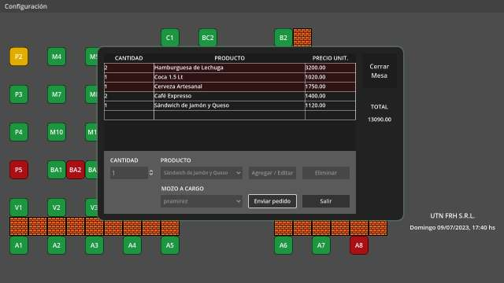
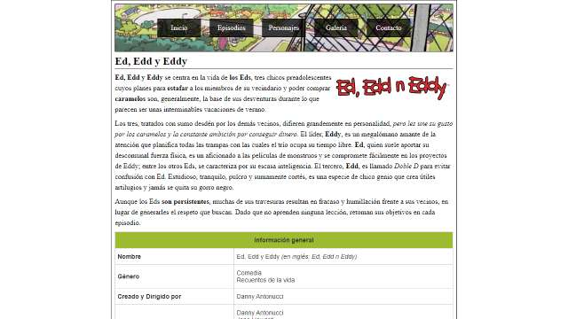
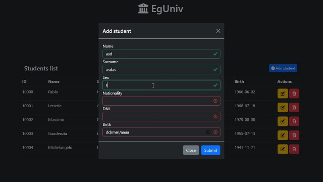

📝 Sobre mi
Soy Fabricio, un desarrollador Full-Stack de Argentina con experiencia profesional en el desarrollo y mantenimiento de aplicaciones empresariales. Durante mi trayectoria trabajé en sistemas de auditorías, fidelización, analítica y gestión interna, participando en el desarrollo de nuevas funcionalidades, resolución de incidencias, automatización de procesos e integraciones entre sistemas.
Trabajo principalmente con PHP, JavaScript, SQL, Redis, Firestore y Docker, además de utilizar herramientas como Git y Postman en mi día a día. Me interesa especialmente el diseño de soluciones simples y mantenibles, la automatización de tareas repetitivas y el análisis de problemas en entornos reales de producción.
También cuento con experiencia previa en soporte técnico y resolución de incidencias, lo que me permitió desarrollar una fuerte orientación a la investigación, el diagnóstico de problemas y la mejora continua. Además, soy Técnico Universitario en Programación por la Universidad Tecnológica Nacional (UTN).
💼 Portafolio
SGG-Web
Un sitio web para la parte práctica del segundo parcial de Laboratorio de Computación IV
SGG-GDEng

Un Sistema de Gestión Gastronómico desarrollado como parte de la Practica Profesional Supervisada
LosEds

Un sitio web para la parte práctica del segundo parcial de Laboratorio de Computación III
CaC-EgUniv

El TP Final del curso Full-Stack Java de Codo a Codo